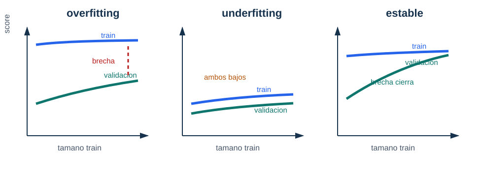

Validación cruzada y curvas de aprendizaje
Pregunta aplicada
Un solo split puede ser afortunado o desafortunado. Necesitamos estimar variabilidad:
¿el modelo funciona de forma estable o solo tuvo suerte en una partición?
Objetivos del capítulo
Al terminar este capítulo deberías poder:
- explicar qué estima cross-validation;
- reportar media y variabilidad de una métrica;
- usar grid search sin contaminar test;
- leer learning curves y validation curves;
- distinguir problemas de sesgo, varianza y ruido.
Cross-validation
En \(k\)-fold cross-validation:
- Se divide el conjunto de entrenamiento en \(k\) folds.
- Se entrena \(k\) veces.
- Cada fold actúa una vez como validación.
- Se reporta media y variabilidad.
scores = cross_val_score(pipeline, X_train, y_train, cv=5, scoring="f1")Qué reportar
Un reporte profesional no dice solo:
F1 = 0.84Dice:
F1 CV = 0.84 ± 0.03La desviación informa estabilidad.
Ejemplo resuelto: elegir entre dos modelos
Supón dos modelos evaluados con 5-fold CV:
| Modelo | F1 medio | Desviación |
|---|---|---|
| A | 0.84 | 0.02 |
| B | 0.86 | 0.10 |
El modelo B tiene mayor promedio, pero también mucha mayor variabilidad. Si el contexto exige estabilidad, A puede ser preferible. Si se elige B, debe justificarse y revisarse en slices o con más datos.
La decisión profesional no mira solo el máximo promedio.
Derivación guiada: media y variabilidad de CV
Si los puntajes de cinco folds son:
\[ 0.80,\ 0.84,\ 0.83,\ 0.86,\ 0.87, \]
la media es:
\[ \bar s=\frac{0.80+0.84+0.83+0.86+0.87}{5}=0.84. \]
La desviación resume qué tanto cambian los resultados entre folds. No convierte la validación cruzada en garantía absoluta, pero sí evita tratar una partición afortunada como evidencia universal. En reportes del curso, escribe media y variabilidad juntas:
F1 CV = 0.84 ± 0.03Si dos modelos tienen medias parecidas, la variabilidad puede decidir cuál es más prudente.
Grid search
Para seleccionar hiperparámetros:
GridSearchCV(
estimator=pipeline,
param_grid=grid,
scoring="f1",
cv=5
)El grid search debe ocurrir dentro de entrenamiento/desarrollo, no sobre test.
Learning curve
Una curva de aprendizaje compara desempeño al aumentar el tamaño del conjunto de entrenamiento.

Lectura de la figura. Una learning curve no se interpreta por el valor final aislado, sino por la relación entre entrenamiento y validación. La brecha sugiere varianza; valores bajos en ambas curvas sugieren sesgo; curvas que se acercan pueden indicar que más datos ayudan.
Señales típicas:
| Señal | Diagnóstico | Acción |
|---|---|---|
| Train alto y val bajo | overfitting | regularizar, simplificar, más datos |
| Train bajo y val bajo | underfitting | modelo más expresivo, mejores features |
| Train y val se acercan | estabilidad | evaluar límite por ruido |
| Val mejora con más datos | conseguir más datos puede ayudar |
Ejemplo resuelto: leer una learning curve
Supón que una curva de aprendizaje produce:
| Tamaño train | F1 train | F1 validación |
|---|---|---|
| 200 | 0.98 | 0.63 |
| 800 | 0.95 | 0.74 |
| 2000 | 0.92 | 0.82 |
| 5000 | 0.90 | 0.86 |
Lectura:
- El desempeño de entrenamiento baja al aumentar datos, lo cual es normal.
- El desempeño de validación sube de forma sostenida.
- La brecha train-validación se reduce de \(0.35\) a \(0.04\).
- El diagnóstico es alta varianza inicial que mejora con más datos.
La acción razonable no es aumentar complejidad. Primero conviene conseguir más datos, usar regularización moderada o mantener el modelo si el costo de más datos es alto.
Validation curve
Una validation curve varía un hiperparámetro:
regularización baja -> modelo flexible
regularización alta -> modelo simplePermite detectar si el hiperparámetro está empujando al modelo hacia overfitting o underfitting.
Caso longitudinal: estabilidad del modelo de clasificación
En clasificacion_binaria_sintetica.csv, una validación de cinco folds puede producir algo como:
| Modelo | F1 CV medio | Desviación | Lectura |
|---|---|---|---|
| logística simple | 0.71 | 0.03 | baseline estable |
| logística con features polinomiales | 0.76 | 0.09 | mejora media, alta varianza |
| modelo regularizado | 0.74 | 0.04 | balance entre mejora y estabilidad |
La selección no es automática. Si el contexto tolera variabilidad y luego se hará error analysis por slice, podría explorarse el modelo polinomial. Si se quiere una recomendación conservadora, el modelo regularizado puede ser más defendible. El punto es que media y desviación se leen juntas.
Sesgo, varianza y ruido
La generalización puede entenderse como una combinación de:
- sesgo: error sistemático por modelo demasiado restrictivo;
- varianza: sensibilidad a cambios en entrenamiento;
- ruido: parte no explicable por las variables disponibles.
No todo error se arregla con un modelo más complejo.
Punto de control
Si una learning curve muestra train alto y validación bajo, no concluyas “necesito una red más grande”. Primero pregunta:
- ¿hay leakage?
- ¿la métrica está alineada con la decisión?
- ¿el modelo ya tiene demasiada varianza?
- ¿más datos podría cerrar la brecha?
Verificaciones seleccionadas
- Evaluar 4 valores de
C, 3 valores depenaltyy 5 folds entrena \(4\cdot3\cdot5=60\) ajustes. - Si la media CV mejora poco pero la desviación se triplica, la mejora puede no justificar el cambio de modelo.
GridSearchCVdebe recibir el pipeline completo cuando hay escalamiento, imputación o selección de variables.
Ejemplo resuelto: cuándo no hacer grid más grande
Si una grilla inicial muestra que todos los valores de regularización fuerte tienen train y dev bajos, aumentar la grilla alrededor de regularización más fuerte probablemente no ayudará. La acción más razonable es revisar features, capacidad del modelo o métrica. Grid search no reemplaza diagnóstico: solo prueba combinaciones dentro del espacio que tú definiste.
Para explorar más
- Extensión matemática: interpreta una curva con alto sesgo y otra con alta varianza usando brechas train/dev.
- Extensión computacional: genera curvas de aprendizaje para dos tamaños de entrenamiento y reporta si más datos parecen útiles.
- Conexión con proyecto: decide qué experimento harías primero: más datos, más regularización, más features o modelo más flexible.
Revisión del capítulo
La validación cruzada estima desempeño con variabilidad. Reportar solo una media oculta si el modelo es estable o si depende demasiado de una partición particular. La desviación entre folds puede cambiar una decisión técnica.
Grid search debe evaluar pipelines completos para no contaminar cada fold. Las learning curves y validation curves ayudan a distinguir sesgo, varianza, falta de datos, hiperparámetros mal calibrados y ruido irreducible.
La pregunta profesional no es únicamente qué modelo gana. Es si la evidencia justifica cambiar complejidad, recolectar datos, ajustar regularización o aceptar un límite. La curva debe terminar en una acción, no solo en una imagen.
Términos clave
- Cross-validation: estimación de desempeño usando varias particiones train/validation.
- Grid search: búsqueda sistemática sobre combinaciones de hiperparámetros.
- Learning curve: curva que compara desempeño al variar tamaño de entrenamiento.
- Validation curve: curva que compara desempeño al variar un hiperparámetro.
- Sesgo: error sistemático por modelo demasiado restrictivo.
- Varianza: sensibilidad del modelo a cambios en datos de entrenamiento.
- Ruido: variación no explicable con las variables disponibles.
Ejercicios
Preguntas conceptuales
- Una learning curve muestra train F1 0.99 y validation F1 0.70. Diagnostique y proponga dos acciones.
- ¿Por qué reportar desviación estándar de cross-validation puede cambiar una decisión de modelo?
Problemas cuantitativos
- Compare dos modelos con medias CV similares pero desviaciones estándar diferentes. ¿Cuál elegiría si la estabilidad es prioritaria?
- Si se evalúan 4 valores de
C, 3 valores depenaltyy 5 folds, ¿cuántos ajustes se entrenan?
Práctica computacional
- Explique por qué
GridSearchCVdebe recibir unPipelinecompleto si hay escalamiento. - Genere una tabla con media y desviación estándar de CV para al menos tres configuraciones.
Interpretación y pensamiento crítico
- Una validation curve mejora hasta cierto punto y luego cae. Explique qué sugiere sobre el hiperparámetro.
- ¿Cuándo buscar más datos es más razonable que cambiar de algoritmo?
Proyecto de cierre
- Construya una learning curve o validation curve para un modelo de su proyecto y escriba un diagnóstico de sesgo/varianza/ruido con una acción siguiente.